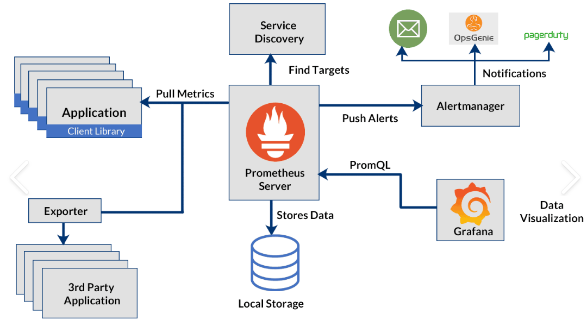

Kubernetes Monitoring on WSL with Prometheus and Grafana
This guide will walk you through integrating Prometheus and Grafana on Kubernetes using Helm. You’ll also learn how to set up a basic dashboard in Grafana. As two of the most widely used open-source monitoring tools for Kubernetes, Prometheus and Grafana provide valuable insights into cluster health and performance. By leveraging Helm for integration, you can efficiently monitor your Kubernetes cluster, diagnose issues, and track resource utilization and performance metrics.
Prerequisites
- Install Docker – Follow the official Docker documentation to set it up on your machine.
- Install Kubectl – Use the official guide to install Kubectl for cluster communication.
- Basic Kubernetes Knowledge – Read the Kubernetes docs or check out Semaphore’s free ebook on CI/CD with Docker and Kubernetes.
- Set Up a Kubernetes Cluster – This guide uses Minikube, a free local Kubernetes cluster.
Introduction to Prometheus
Prometheus is an open-source DevOps tool. It provides monitoring and real-time alerting functionality for container orchestration platforms like Kubernetes. It collects and stores the metrics from the platform as time series data.
The metrics that Prometheus collects from the Kubernetes cluster are:
- Kubernetes cluster health.
- CPU status.
- Memory usage.
- Kubernetes nodes status.
- Reports on potential performance bottlenecks.
- Performance metrics.
- Server resources.
Introduction to Grafana
Grafana is an open-source data visualization and monitoring tool that helps users analyze and interpret metrics from various data sources. It is widely used for visualizing time-series data, making it ideal for monitoring the performance of infrastructure, applications, and services in real-time.
Grafana offers:
- Real-Time Data Visualization – Provides dynamic dashboards for real-time monitoring of metrics and logs.
- Multiple Data Source Integration – Connects to various data sources like Prometheus, InfluxDB, and MySQL.
- Customizable Dashboards – Allows users to design personalized dashboards with various visualizations such as graphs, charts, and heatmaps.
- Alerting and Notification – Configures alerts based on specific conditions and sends notifications through Slack, email, and other services.
In this Guide, we’ll be using Grafana with Prometheus as a data source.
Architecture of Prometheus:

This architecture represents a Prometheus-based monitoring system used for collecting, storing, querying, and visualizing metrics from applications and third-party services
Key Components of Prometheus:
****1. Prometheus Server is the core component in the Prometheus architecture. It is where the actual monitoring job occurs. It is responsible for
- Pulling metrics from applications and exporters.
- Storing data in local storage.
- Running queries using PromQL (Prometheus Query Language).
- Pushing alerts to Alertmanager.
- Alert manager alerts users via email and other communication channels.
- Grafana is used for Data Visualization It does:
- Queries Prometheus using PromQL.
- Provides dashboards and visualizations for monitoring.
- Service discovery is a mechanism that allows Prometheus to dynamically find and scrape metrics from targets (applications, services, or exporters) without manual configuration. It helps automate monitoring in dynamic environments like Kubernetes, cloud platforms, and microservices architectures.
Setting Up Prometheus in Ubuntu
Here in this tutorial we’ll use HELM for setup. Helm is a package manager for Kubernetes that simplifies the deployment and management of applications using pre-configured Helm charts. Instead of manually writing complex YAML files for Prometheus, Helm allows us to deploy it with a single command while ensuring best practices.
Installation Of Helm
Before installing Helm lets start our Minikube cluster using:
minikube start
Now run the following commands:
This script automatically detects your OS and installs Helm.
curl [https://raw.githubusercontent.com/helm/helm/main/scripts/get-helm-3](https://raw.githubusercontent.com/helm/helm/main/scripts/get-helm-3) | bash
Now Verify Helm Installation, using
helm version
These commands add the Prometheus and Grafana Helm chart repositories and update the local repository index to fetch the latest available charts.
helm repo add prometheus-community https://prometheus-community.github.io/helm-charts
helm repo add grafana https://grafana.github.io/helm-charts
helm repo update
helm install prometheus prometheus-community/kube-prometheus-stack
Now after successful installation of Prometheus the services are created for Prometheus.

We’ll use the prometheus-kube-prometheus-prometheus Kubernetes service to access the Prometheus application.
To access the Prometheus server from the browser, we need to expose the prometheus-kube-prometheus-prometheus service as a NodePort. This allows us to reach Prometheus externally using the node’s IP and a specified port.
Run command:
kubectl expose service prometheus-kube-prometheus-prometheus --type=NodePort --target-port=3000 --name=prometheus-nodeport
If You’re using it in WSL you may need to run the following command to access it through browser.
nohup socat TCP-LISTEN:<port number>,fork TCP:<minikubeip>:30860 &
The port 30860 is assigned by Nodeport service. Change it accordingly.
Since I’ve already done the steps prometheus-nodeport service is created as NodePort.
Now, the Prometheus Server can be accessed from the Browser using ip
<minikube ip>:30860 #Remember to change the port number
The web interface looks like this. Since I was using WSL the server is available in localhost.

Installation Of Grafana
Now lets setup Grafana. Run the following command to install grafana.
helm install grafana grafana/grafana
After successful installation of grafana we need password to login. Run this command :
kubectl get secret --namespace default grafana -o jsonpath="{.data.admin-password}" | base64 --decode ; echo
#Bvc83cKmrlSIs9UBiuuslRjRhnUzeLZ6iliyFMLJ this is returned password
Now similarly expose the grafana as Nodeport to access it through browser.
kubectl expose service grafana --type=NodePort --target-port=3000 --name=grafana-nodeport
Run this command.
Now access the grafana web interface from the following ip. If using WSL we need to forward the port similar to Prometheus as above to access it through browser interface
<minikubeip>:32104
It’ll ask for userid and Password:
After Login the User interface is available from the web browser.
Lets add Prometheus as our data source. Click on Add your first data source

Add Prometheus as database source.

In Prometheus server URL add the ip minikube and port where the Nodeport is exposed. This ensures Grafana successfully pulls metrics from the Prometheus server running in your Kubernetes cluster


After saving it shows Successful i.e Grafana successfully set up the Prometheus as its data source.
Creating a dashboard
Click on Import Dashboard

Enter a description for the dashboard, then click Save. Next, navigate to the Import Dashboard section. Instead of creating a new dashboard from scratch, we’ll import a pre-built one using its ID. Simply enter 3662 (or any other relevant dashboard ID), click Load, and follow the prompts to complete the import.

Now, click LOAD, and Grafana will automatically fetch the predefined dashboard. Once loaded, you’ll see a visualization of your Kubernetes cluster, displaying real-time metrics from Prometheus

In this dashboard we have metrics regarding the native Kubernetes services, but let’s say we want to know the staus of a deployment, running replicas, current state of k8s service from Prometheus? This is where the service Prometheus-kube-state-metrics comes into play.
This will be covered in the next part of this walkthrough, where we will expose this service and explore how it enables the visualization of more data from the Kubernetes cluster.